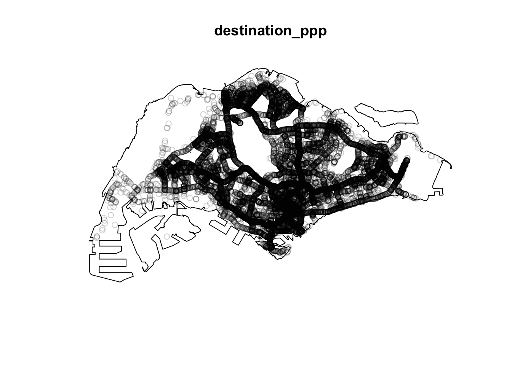
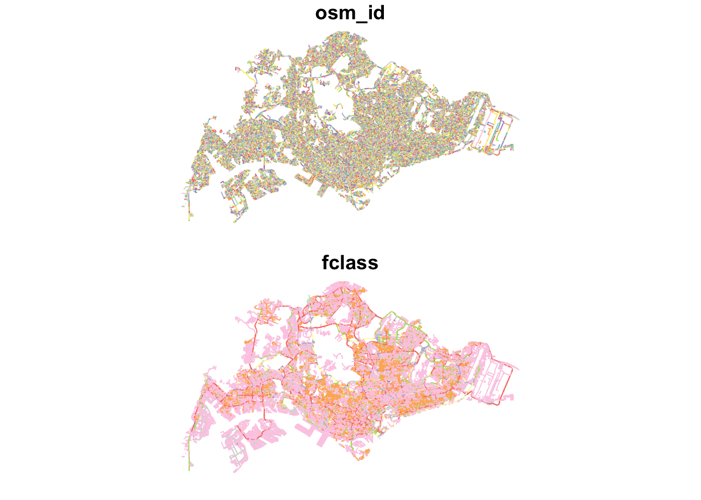
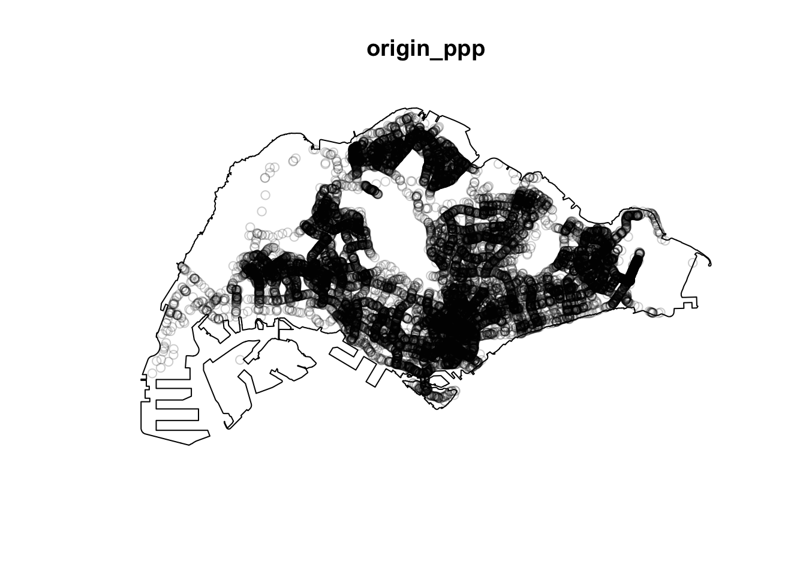
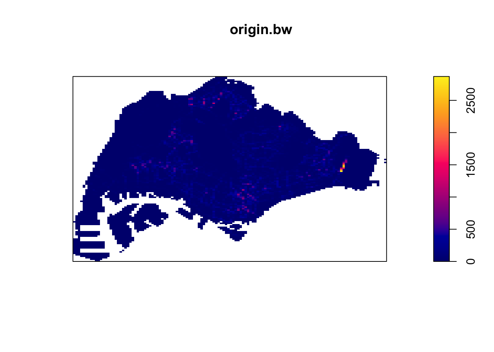
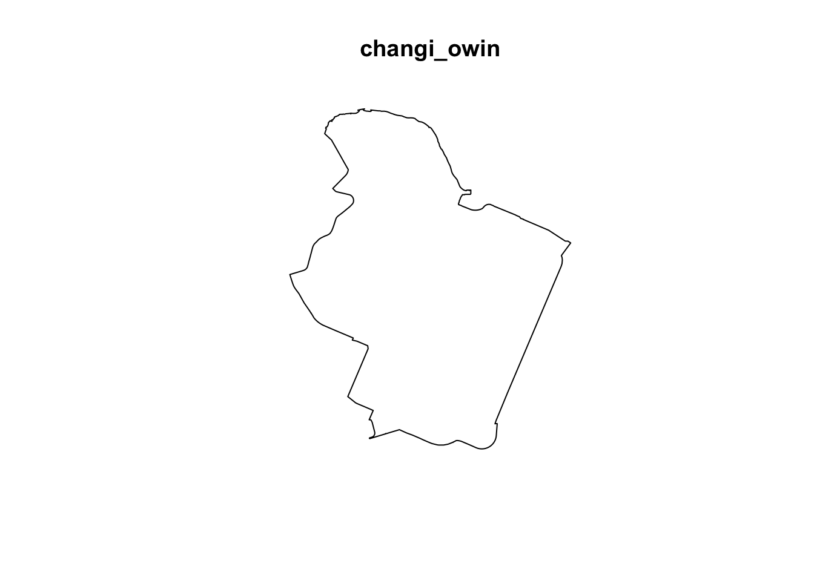

pacman::p_load(tidyverse, sf, tmap, maptools, spatstat, spNetwork, tmap, classInt, viridis, smoothr, arrow, stringr, purrr)Take-Home Exercise 1
Take-Home Exercise
Take-Home Exercise 1
1.0 Overview
1.1 Objectives
Exercise Requirements
- Using appropriate function of sf and tidyverse, preparing the following geospatial data layer in sf tibble data.frames:
Grab taxi location points either by origins or destinations.
Road layer within Singapore excluding outer islands.
Singapore boundary layer excluding outer islands
- Using the extracted data, derive traditional Kernel Density Estimation layers.
- Using the extracted data, derive either Network Kernel Density Estimation (NKDE) or Temporal Network Kernel Density Estimation (TNKDE) Using appropriate tmap functions, display the kernel density layers on openstreetmap of Singapore.
- Describe the spatial patterns revealed by the kernel density maps.
1.2 Approach
This exercise seems quite straightforward, but I think that some genuinely useful information can be derived from this data. While removing the outer islands can be done fairly easily, I think that other small issues, like holes in the geometry will need to be fixed.
NKDE may also require very long computation times for large areas, especially given the magnitude of the entire dataset. The GrabPosisi dataset’s journey start and destination locations likely occur along smaller roads where people can walk. These small roads are likely near other small roads, which will greatly increase the number of affect lixels for every NKDE operation. Since these small roads will have the most interesting data, I will have to scale down my analysis to smaller locations determined by the simpler KDE analysis.
2.0 Setup
2.1 Dependencies
Aside from the tools used in class, I also included some additional tools I found useful.
2.2 Datasets
Aspatial data
Grab-Posisi Singapore dataset
Geospatial data
- Road data set from Geofabrik’s OpenStreetMap.
- Although the dataset includes all of Malaysia, Singapore, and Brunei, only Singapore’s data will required.
- Master Plan 2019 Subzone Boundary (No Sea) from Data.gov.sg.
3.0 Data Wrangling
3.1 Importing Data
Reading the Grab-Posisi Parquet Files
grabp <- open_dataset("data/aspatial/GrabPosisi/") %>% as.data.frame()Opening the geospatial data
mpsz = st_read("data/geospatial/MasterPlan2019SubzoneBoundaryNoSeaKML.kml")Reading layer `URA_MP19_SUBZONE_NO_SEA_PL' from data source
`/Users/matthewho/Work/Y3S2/IS415/Website/IS415/TakeHomeEx/TakeHomeEx1/data/geospatial/MasterPlan2019SubzoneBoundaryNoSeaKML.kml'
using driver `KML'
Simple feature collection with 332 features and 2 fields
Geometry type: MULTIPOLYGON
Dimension: XY, XYZ
Bounding box: xmin: 103.6057 ymin: 1.158699 xmax: 104.0885 ymax: 1.470775
z_range: zmin: 0 zmax: 0
Geodetic CRS: WGS 84mpsz$Description[1][1] "<center><table><tr><th colspan='2' align='center'><em>Attributes</em></th></tr><tr bgcolor=\"#E3E3F3\"> <th>SUBZONE_NO</th> <td>12</td> </tr><tr bgcolor=\"\"> <th>SUBZONE_N</th> <td>DEPOT ROAD</td> </tr><tr bgcolor=\"#E3E3F3\"> <th>SUBZONE_C</th> <td>BMSZ12</td> </tr><tr bgcolor=\"\"> <th>CA_IND</th> <td>N</td> </tr><tr bgcolor=\"#E3E3F3\"> <th>PLN_AREA_N</th> <td>BUKIT MERAH</td> </tr><tr bgcolor=\"\"> <th>PLN_AREA_C</th> <td>BM</td> </tr><tr bgcolor=\"#E3E3F3\"> <th>REGION_N</th> <td>CENTRAL REGION</td> </tr><tr bgcolor=\"\"> <th>REGION_C</th> <td>CR</td> </tr><tr bgcolor=\"#E3E3F3\"> <th>INC_CRC</th> <td>C22DED671DE2A940</td> </tr><tr bgcolor=\"\"> <th>FMEL_UPD_D</th> <td>20191223152313</td> </tr></table></center>"https://www.linkedin.com/pulse/r-using-stringr-extract-information-from-html-tags-kml-melvin-kew/
mpsz <- mpsz %>%
mutate(Match=str_match_all(Description,"<td>(.*?)</td>")) %>%
mutate(Match=map(Match, ~ .[,2])) %>%
mutate(Match=map(Match,setNames,c("SUBZONE_NO","SUBZONE_N","SUBZONE_C", "CA_IND", "PLN_AREA_N", "PLN_AREA_C", "REGION_N", "REGION_C", "INC_CRC", "FMEL_UPD_D"))) %>%
unnest_wider(Match) %>%
st_as_sf()summary(mpsz) Name Description geometry SUBZONE_NO
Length:332 Length:332 MULTIPOLYGON : 11 Length:332
Class :character Class :character MULTIPOLYGON Z:321 Class :character
Mode :character Mode :character epsg:4326 : 0 Mode :character
+proj=long... : 0
SUBZONE_N SUBZONE_C CA_IND PLN_AREA_N
Length:332 Length:332 Length:332 Length:332
Class :character Class :character Class :character Class :character
Mode :character Mode :character Mode :character Mode :character
PLN_AREA_C REGION_N REGION_C INC_CRC
Length:332 Length:332 Length:332 Length:332
Class :character Class :character Class :character Class :character
Mode :character Mode :character Mode :character Mode :character
FMEL_UPD_D
Length:332
Class :character
Mode :character
mpsz <- mpsz %>% dplyr::select('Name', 'Description', 'geometry', 'SUBZONE_NO', 'SUBZONE_N', 'PLN_AREA_N', 'PLN_AREA_C', 'REGION_N', 'REGION_C')
summary(mpsz) Name Description geometry SUBZONE_NO
Length:332 Length:332 MULTIPOLYGON : 11 Length:332
Class :character Class :character MULTIPOLYGON Z:321 Class :character
Mode :character Mode :character epsg:4326 : 0 Mode :character
+proj=long... : 0
SUBZONE_N PLN_AREA_N PLN_AREA_C REGION_N
Length:332 Length:332 Length:332 Length:332
Class :character Class :character Class :character Class :character
Mode :character Mode :character Mode :character Mode :character
REGION_C
Length:332
Class :character
Mode :character
osm = st_read("data/geospatial/osm.shp.zip", layer="gis_osm_roads_free_1")Reading layer `gis_osm_roads_free_1' from data source
`/Users/matthewho/Work/Y3S2/IS415/Website/IS415/TakeHomeEx/TakeHomeEx1/data/geospatial/osm.shp.zip'
using driver `ESRI Shapefile'
Simple feature collection with 1763129 features and 10 fields
Geometry type: LINESTRING
Dimension: XY
Bounding box: xmin: 99.66041 ymin: 0.8021131 xmax: 119.2601 ymax: 7.514393
Geodetic CRS: WGS 843.2 Basic preprocessing
head(grabp)# A tibble: 6 × 9
trj_id driving_mode osname pingtimestamp rawlat rawlng speed bearing accuracy
<chr> <chr> <chr> <int> <dbl> <dbl> <dbl> <int> <dbl>
1 70014 car android 1554943236 1.34 104. 18.9 248 3.9
2 73573 car android 1555582623 1.32 104. 17.7 44 4
3 75567 car android 1555141026 1.33 104. 14.0 34 3.9
4 1410 car android 1555731693 1.26 104. 13.0 181 4
5 4354 car android 1555584497 1.28 104. 14.8 93 3.9
6 32630 car android 1555395258 1.30 104. 23.2 73 3.9grabp$pingtimestamp <- as_datetime(grabp$pingtimestamp)origin_df <- grabp %>%
group_by(trj_id) %>%
arrange(pingtimestamp) %>%
filter(row_number()==1) %>%
mutate(weekday = wday(pingtimestamp,
label=TRUE,
abbr=TRUE),
start_hr = factor(hour(pingtimestamp)),
day = factor(mday(pingtimestamp))) %>%
st_as_sf(coords = c("rawlng", "rawlat"),
crs = 4326) %>%
st_transform(crs = 3414)
destination_df <- grabp %>%
group_by(trj_id) %>%
arrange(desc(pingtimestamp)) %>%
filter(row_number()==1) %>%
mutate(weekday = wday(pingtimestamp,
label=TRUE,
abbr=TRUE),
end_hr = factor(hour(pingtimestamp)),
day = factor(mday(pingtimestamp))) %>%
st_as_sf(coords = c("rawlng", "rawlat"),
crs = 4326) %>%
st_transform(crs = 3414)
head(origin_df)Simple feature collection with 6 features and 10 fields
Geometry type: POINT
Dimension: XY
Bounding box: xmin: 17201.85 ymin: 29236.55 xmax: 31518.05 ymax: 47967.97
Projected CRS: SVY21 / Singapore TM
# A tibble: 6 × 11
# Groups: trj_id [6]
trj_id driving_mode osname pingtimestamp speed bearing accuracy weekday
<chr> <chr> <chr> <dttm> <dbl> <int> <dbl> <ord>
1 70895 car andro… 2019-04-08 00:09:26 9.95 111 4 Mon
2 21926 car andro… 2019-04-08 00:09:48 11.0 75 4 Mon
3 47498 car ios 2019-04-08 00:09:50 18.6 307 8 Mon
4 18103 car andro… 2019-04-08 00:09:55 0.404 159 3 Mon
5 41322 car andro… 2019-04-08 00:09:57 17.9 232 3.9 Mon
6 64813 car ios 2019-04-08 00:10:03 17.1 106 10 Mon
# ℹ 3 more variables: start_hr <fct>, day <fct>, geometry <POINT [m]>head(destination_df)Simple feature collection with 6 features and 10 fields
Geometry type: POINT
Dimension: XY
Bounding box: xmin: 14101.2 ymin: 33097.49 xmax: 44192.98 ymax: 46866.96
Projected CRS: SVY21 / Singapore TM
# A tibble: 6 × 11
# Groups: trj_id [6]
trj_id driving_mode osname pingtimestamp speed bearing accuracy weekday
<chr> <chr> <chr> <dttm> <dbl> <int> <dbl> <ord>
1 81574 car ios 2019-04-21 23:56:49 15.3 103 8 Sun
2 54687 car android 2019-04-21 23:56:46 8.15 299 4.55 Sun
3 17190 car android 2019-04-21 23:56:36 12.4 202 4 Sun
4 13793 car android 2019-04-21 23:56:30 6.47 170 3.9 Sun
5 39014 car ios 2019-04-21 23:56:27 3.59 169 4 Sun
6 41170 car ios 2019-04-21 23:56:13 13.1 71 5 Sun
# ℹ 3 more variables: end_hr <fct>, day <fct>, geometry <POINT [m]>origin_df <- origin_df %>% dplyr::select('trj_id', 'pingtimestamp', 'geometry', 'weekday', 'start_hr', 'day', 'geometry')
destination_df <- destination_df %>% dplyr::select('trj_id', 'pingtimestamp', 'geometry', 'weekday', 'end_hr', 'day', 'geometry')write_rds(origin_df, "data/rds/origin.rds")
write_rds(destination_df, "data/rds/destination.rds")destination_df <- read_rds("data/rds/destination.rds")
origin_df <- read_rds("data/rds/origin.rds")head(osm)Simple feature collection with 6 features and 10 fields
Geometry type: LINESTRING
Dimension: XY
Bounding box: xmin: 101.7033 ymin: 1.305992 xmax: 103.8301 ymax: 3.147986
Geodetic CRS: WGS 84
osm_id code fclass name ref oneway maxspeed layer
1 4386520 5113 primary Orchard Road <NA> F 50 0
2 4578273 5114 secondary Jalan Bukit Bintang <NA> F 0 0
3 4579495 5122 residential Jalan Nagasari <NA> B 0 0
4 4579533 5122 residential Persiaran Raja Chulan <NA> B 0 0
5 4579534 5122 residential Jalan Ceylon <NA> B 0 0
6 4579536 5122 residential Changkat Bukit Bintang <NA> F 0 0
bridge tunnel geometry
1 F F LINESTRING (103.8301 1.3060...
2 F F LINESTRING (101.7226 3.1478...
3 F F LINESTRING (101.7084 3.1473...
4 F F LINESTRING (101.7043 3.1468...
5 F F LINESTRING (101.7033 3.1476...
6 F F LINESTRING (101.7088 3.1470...unique(osm$fclass) [1] "primary" "secondary" "residential" "service"
[5] "track" "tertiary" "footway" "primary_link"
[9] "motorway_link" "tertiary_link" "motorway" "unclassified"
[13] "trunk" "trunk_link" "secondary_link" "pedestrian"
[17] "living_street" "path" "steps" "cycleway"
[21] "track_grade2" "track_grade4" "track_grade1" "track_grade3"
[25] "unknown" "track_grade5" "bridleway" https://www.geofabrik.de/data/geofabrik-osm-gis-standard-0.3.pdf
values_to_keep <- c("primary", "secondary", "residential", "service", "tertiary", "primary_link", "motorway", "motorway_link", "tertiary_link", "living_street", "trunk", "trunk_link")
osm <- osm[osm$fclass %in% values_to_keep, ]summary(osm) osm_id code fclass name
Length:1417871 Min. :5111 Length:1417871 Length:1417871
Class :character 1st Qu.:5122 Class :character Class :character
Mode :character Median :5132 Mode :character Mode :character
Mean :5131
3rd Qu.:5141
Max. :5141
ref oneway maxspeed layer
Length:1417871 Length:1417871 Min. : 0.000 Min. :-5.00000
Class :character Class :character 1st Qu.: 0.000 1st Qu.: 0.00000
Mode :character Mode :character Median : 0.000 Median : 0.00000
Mean : 3.665 Mean : 0.02351
3rd Qu.: 0.000 3rd Qu.: 0.00000
Max. :110.000 Max. : 5.00000
bridge tunnel geometry
Length:1417871 Length:1417871 LINESTRING :1417871
Class :character Class :character epsg:4326 : 0
Mode :character Mode :character +proj=long...: 0
unique(osm$fclass) [1] "primary" "secondary" "residential" "service"
[5] "tertiary" "primary_link" "motorway_link" "tertiary_link"
[9] "motorway" "trunk" "trunk_link" "living_street"length(which(st_is_valid(mpsz) == FALSE))[1] 6mpsz[which(st_is_valid(mpsz) == FALSE), ]Simple feature collection with 6 features and 8 fields
Geometry type: MULTIPOLYGON
Dimension: XY, XYZ
Bounding box: xmin: 103.7098 ymin: 1.212326 xmax: 104.0885 ymax: 1.440698
z_range: zmin: 0 zmax: 0
Geodetic CRS: WGS 84
# A tibble: 6 × 9
Name Description geometry SUBZONE_NO SUBZONE_N PLN_AREA_N
<chr> <chr> <MULTIPOLYGON [°]> <chr> <chr> <chr>
1 kml_30 "<center><t… (((103.8591 1.22068, 103… 2 SOUTHERN… SOUTHERN …
2 kml_31 "<center><t… (((103.8232 1.257481, 10… 1 SENTOSA SOUTHERN …
3 kml_35 "<center><t… Z (((103.8236 1.260178 0… 1 MARITIME… BUKIT MER…
4 kml_59 "<center><t… Z (((103.9321 1.305548 0… 7 SIGLAP BEDOK
5 kml_109 "<center><t… (((103.7119 1.29961, 103… 10 JURONG P… JURONG EA…
6 kml_318 "<center><t… (((104.0541 1.432306, 10… 1 NORTH-EA… NORTH-EAS…
# ℹ 3 more variables: PLN_AREA_C <chr>, REGION_N <chr>, REGION_C <chr>mpsz <- st_make_valid(mpsz)
mpsz <- st_zm(mpsz)3.3 CRS Adjustments and Verification
st_crs(mpsz)Coordinate Reference System:
User input: WGS 84
wkt:
GEOGCRS["WGS 84",
DATUM["World Geodetic System 1984",
ELLIPSOID["WGS 84",6378137,298.257223563,
LENGTHUNIT["metre",1]]],
PRIMEM["Greenwich",0,
ANGLEUNIT["degree",0.0174532925199433]],
CS[ellipsoidal,2],
AXIS["geodetic latitude (Lat)",north,
ORDER[1],
ANGLEUNIT["degree",0.0174532925199433]],
AXIS["geodetic longitude (Lon)",east,
ORDER[2],
ANGLEUNIT["degree",0.0174532925199433]],
ID["EPSG",4326]]st_crs(osm)Coordinate Reference System:
User input: WGS 84
wkt:
GEOGCRS["WGS 84",
DATUM["World Geodetic System 1984",
ELLIPSOID["WGS 84",6378137,298.257223563,
LENGTHUNIT["metre",1]]],
PRIMEM["Greenwich",0,
ANGLEUNIT["degree",0.0174532925199433]],
CS[ellipsoidal,2],
AXIS["latitude",north,
ORDER[1],
ANGLEUNIT["degree",0.0174532925199433]],
AXIS["longitude",east,
ORDER[2],
ANGLEUNIT["degree",0.0174532925199433]],
ID["EPSG",4326]]osm <- st_transform(osm, crs = 3414)mpsz <- st_transform(mpsz, crs = 3414)st_crs(mpsz)Coordinate Reference System:
User input: EPSG:3414
wkt:
PROJCRS["SVY21 / Singapore TM",
BASEGEOGCRS["SVY21",
DATUM["SVY21",
ELLIPSOID["WGS 84",6378137,298.257223563,
LENGTHUNIT["metre",1]]],
PRIMEM["Greenwich",0,
ANGLEUNIT["degree",0.0174532925199433]],
ID["EPSG",4757]],
CONVERSION["Singapore Transverse Mercator",
METHOD["Transverse Mercator",
ID["EPSG",9807]],
PARAMETER["Latitude of natural origin",1.36666666666667,
ANGLEUNIT["degree",0.0174532925199433],
ID["EPSG",8801]],
PARAMETER["Longitude of natural origin",103.833333333333,
ANGLEUNIT["degree",0.0174532925199433],
ID["EPSG",8802]],
PARAMETER["Scale factor at natural origin",1,
SCALEUNIT["unity",1],
ID["EPSG",8805]],
PARAMETER["False easting",28001.642,
LENGTHUNIT["metre",1],
ID["EPSG",8806]],
PARAMETER["False northing",38744.572,
LENGTHUNIT["metre",1],
ID["EPSG",8807]]],
CS[Cartesian,2],
AXIS["northing (N)",north,
ORDER[1],
LENGTHUNIT["metre",1]],
AXIS["easting (E)",east,
ORDER[2],
LENGTHUNIT["metre",1]],
USAGE[
SCOPE["Cadastre, engineering survey, topographic mapping."],
AREA["Singapore - onshore and offshore."],
BBOX[1.13,103.59,1.47,104.07]],
ID["EPSG",3414]]st_crs(osm)Coordinate Reference System:
User input: EPSG:3414
wkt:
PROJCRS["SVY21 / Singapore TM",
BASEGEOGCRS["SVY21",
DATUM["SVY21",
ELLIPSOID["WGS 84",6378137,298.257223563,
LENGTHUNIT["metre",1]]],
PRIMEM["Greenwich",0,
ANGLEUNIT["degree",0.0174532925199433]],
ID["EPSG",4757]],
CONVERSION["Singapore Transverse Mercator",
METHOD["Transverse Mercator",
ID["EPSG",9807]],
PARAMETER["Latitude of natural origin",1.36666666666667,
ANGLEUNIT["degree",0.0174532925199433],
ID["EPSG",8801]],
PARAMETER["Longitude of natural origin",103.833333333333,
ANGLEUNIT["degree",0.0174532925199433],
ID["EPSG",8802]],
PARAMETER["Scale factor at natural origin",1,
SCALEUNIT["unity",1],
ID["EPSG",8805]],
PARAMETER["False easting",28001.642,
LENGTHUNIT["metre",1],
ID["EPSG",8806]],
PARAMETER["False northing",38744.572,
LENGTHUNIT["metre",1],
ID["EPSG",8807]]],
CS[Cartesian,2],
AXIS["northing (N)",north,
ORDER[1],
LENGTHUNIT["metre",1]],
AXIS["easting (E)",east,
ORDER[2],
LENGTHUNIT["metre",1]],
USAGE[
SCOPE["Cadastre, engineering survey, topographic mapping."],
AREA["Singapore - onshore and offshore."],
BBOX[1.13,103.59,1.47,104.07]],
ID["EPSG",3414]]osm <- osm %>% dplyr::select('osm_id', 'fclass')plot(st_geometry(mpsz))
Outer Island:
An island in Singapore inaccessible by road
Therefore, Coney Island, Jurong Island and Sentosa are not outer islands.
Pulau Ubin and Pulau Tekong are examples of outer islands.
merged_sg <- st_union(mpsz) %>%
st_cast("POLYGON")
merged_sg <- merged_sg[c(10)]
merged_sg <- fill_holes(merged_sg, units::set_units(1, "km^2"))
merged_sg <- st_as_sf(merged_sg)
par(1,2)[[1]]
NULL
[[2]]
NULLplot(st_geometry(mpsz))
plot(st_geometry(merged_sg))
write_rds(merged_sg, "data/rds/merged_sg.rds")merged_sg <- read_rds("data/rds/merged_sg.rds")merged_st <- as_Spatial(merged_sg)
merged_sg_sp <- as(merged_st, "SpatialPolygons")
merged_sg_owin <- as(merged_sg_sp, "owin")
write_rds(merged_sg_owin, "data/rds/merged_sg_owin.rds")# merged_sg_owin <- read_rds("data/rds/merged_sg_owin.rds")osm_sg <- st_intersection(osm, merged_sg)osm_sg <- st_cast(st_cast(osm_sg, "MULTILINESTRING"),"LINESTRING")
summary(osm_sg) osm_id fclass geometry
Length:157836 Length:157836 LINESTRING :157836
Class :character Class :character epsg:3414 : 0
Mode :character Mode :character +proj=tmer...: 0 write_rds(osm_sg, "data/rds/osm_sg.rds")osm_sg <- read_rds("data/rds/osm_sg.rds")plot(osm_sg)
origin <- as_Spatial(origin_df)
destination <- as_Spatial(destination_df)
origin_sp <- as(origin, "SpatialPoints")
destination_sp <- as(destination, "SpatialPoints")
origin_ppp <- as(origin_sp, "ppp")
destination_ppp <- as(destination_sp, "ppp")origin_ppp <- origin_ppp[merged_sg_owin]
destination_ppp <- destination_ppp[merged_sg_owin]3.4 Simple Visualisations
plot(origin_ppp)
plot(destination_ppp)
any(duplicated(origin_ppp))[1] FALSEany(duplicated(destination_ppp))[1] FALSE4.0 KDE
sapply(origin_ppp, class) window n x y markformat
"owin" "integer" "numeric" "numeric" "character" sapply(origin_ppp, typeof) window n x y markformat
"list" "integer" "double" "double" "character" class(origin_ppp)[1] "ppp"origin_ppp$x <- as.numeric(origin_ppp$x)
summary(origin_ppp)Planar point pattern: 28000 points
Average intensity 3.995238e-05 points per square unit
Coordinates are given to 3 decimal places
i.e. rounded to the nearest multiple of 0.001 units
Window: polygonal boundary
single connected closed polygon with 15268 vertices
enclosing rectangle: [2667.54, 51404.13] x [21448.48, 50256.33] units
(48740 x 28810 units)
Window area = 700834000 square units
Fraction of frame area: 0.499par(1,2)[[1]]
NULL
[[2]]
NULLorigin.bw <- density(origin_ppp,
sigma=bw.diggle,
edge=TRUE,
kernel="quartic")
plot(origin.bw)
origin_ppp.km <- rescale(origin_ppp, 1000, "km")
origin.bw <- density(origin_ppp.km,
sigma=bw.diggle,
edge=TRUE,
kernel="quartic")
plot(origin.bw)
par(1,2)[[1]]
NULL
[[2]]
NULLdestination.bw <- density(destination_ppp,
sigma=bw.diggle,
edge=TRUE,
kernel="quartic")
plot(destination.bw)
destination_ppp.km <- rescale(destination_ppp, 1000, "km")
destination.bw <- density(destination_ppp.km,
sigma=bw.diggle,
edge=TRUE,
kernel="quartic")
plot(destination.bw)sort(mpsz$SUBZONE_N) [1] "ADMIRALTY" "AIRPORT ROAD"
[3] "ALEXANDRA HILL" "ALEXANDRA NORTH"
[5] "ALJUNIED" "ANAK BUKIT"
[7] "ANCHORVALE" "ANG MO KIO TOWN CENTRE"
[9] "ANSON" "BAHAR"
[11] "BALESTIER" "BANGKIT"
[13] "BAYFRONT SUBZONE" "BAYSHORE"
[15] "BEDOK NORTH" "BEDOK RESERVOIR"
[17] "BEDOK SOUTH" "BENCOOLEN"
[19] "BENDEMEER" "BENOI SECTOR"
[21] "BIDADARI" "BISHAN EAST"
[23] "BOAT QUAY" "BOON KENG"
[25] "BOON LAY PLACE" "BOON TECK"
[27] "BOULEVARD" "BRADDELL"
[29] "BRAS BASAH" "BRICKLAND"
[31] "BRICKWORKS" "BUGIS"
[33] "BUKIT BATOK CENTRAL" "BUKIT BATOK EAST"
[35] "BUKIT BATOK SOUTH" "BUKIT BATOK WEST"
[37] "BUKIT HO SWEE" "BUKIT MERAH"
[39] "CAIRNHILL" "CECIL"
[41] "CENTRAL SUBZONE" "CENTRAL WATER CATCHMENT"
[43] "CHANGI AIRPORT" "CHANGI BAY"
[45] "CHANGI POINT" "CHANGI WEST"
[47] "CHATSWORTH" "CHENG SAN"
[49] "CHIN BEE" "CHINA SQUARE"
[51] "CHINATOWN" "CHOA CHU KANG CENTRAL"
[53] "CHOA CHU KANG NORTH" "CHONG BOON"
[55] "CITY HALL" "CITY TERMINALS"
[57] "CLARKE QUAY" "CLEANTECH"
[59] "CLEMENTI CENTRAL" "CLEMENTI NORTH"
[61] "CLEMENTI WEST" "CLEMENTI WOODS"
[63] "CLIFFORD PIER" "COMMONWEALTH"
[65] "COMPASSVALE" "CONEY ISLAND"
[67] "CORONATION ROAD" "CRAWFORD"
[69] "DAIRY FARM" "DEFU INDUSTRIAL PARK"
[71] "DEPOT ROAD" "DHOBY GHAUT"
[73] "DOVER" "DUNEARN"
[75] "EAST COAST" "EVERTON PARK"
[77] "FABER" "FAJAR"
[79] "FARRER COURT" "FARRER PARK"
[81] "FERNVALE" "FLORA DRIVE"
[83] "FOREST HILL" "FORT CANNING"
[85] "FRANKEL" "GALI BATU"
[87] "GARDEN" "GEYLANG BAHRU"
[89] "GEYLANG EAST" "GHIM MOH"
[91] "GOMBAK" "GOODWOOD PARK"
[93] "GREENWOOD PARK" "GUILIN"
[95] "GUL BASIN" "GUL CIRCLE"
[97] "HENDERSON HILL" "HILLCREST"
[99] "HILLVIEW" "HOLLAND DRIVE"
[101] "HOLLAND ROAD" "HONG KAH"
[103] "HONG KAH NORTH" "HOUGANG CENTRAL"
[105] "HOUGANG EAST" "HOUGANG WEST"
[107] "INSTITUTION HILL" "INTERNATIONAL BUSINESS PARK"
[109] "ISTANA NEGARA" "JELEBU"
[111] "JOO KOON" "JOO SENG"
[113] "JURONG GATEWAY" "JURONG ISLAND AND BUKOM"
[115] "JURONG PORT" "JURONG RIVER"
[117] "JURONG WEST CENTRAL" "KAKI BUKIT"
[119] "KALLANG BAHRU" "KALLANG WAY"
[121] "KAMPONG BUGIS" "KAMPONG GLAM"
[123] "KAMPONG JAVA" "KAMPONG TIONG BAHRU"
[125] "KAMPONG UBI" "KANGKAR"
[127] "KATONG" "KEAT HONG"
[129] "KEBUN BAHRU" "KEMBANGAN"
[131] "KENT RIDGE" "KHATIB"
[133] "KIAN TECK" "KIM KEAT"
[135] "KOVAN" "KRANJI"
[137] "LAKESIDE (BUSINESS)" "LAKESIDE (LEISURE)"
[139] "LAVENDER" "LEEDON PARK"
[141] "LEONIE HILL" "LIM CHU KANG"
[143] "LITTLE INDIA" "LIU FANG"
[145] "LORONG 8 TOA PAYOH" "LORONG AH SOO"
[147] "LORONG CHUAN" "LORONG HALUS"
[149] "LORONG HALUS NORTH" "LOWER SELETAR"
[151] "LOYANG EAST" "LOYANG WEST"
[153] "MACKENZIE" "MACPHERSON"
[155] "MALCOLM" "MANDAI EAST"
[157] "MANDAI ESTATE" "MANDAI WEST"
[159] "MARGARET DRIVE" "MARINA CENTRE"
[161] "MARINA EAST" "MARINA EAST (MP)"
[163] "MARINA SOUTH" "MARINE PARADE"
[165] "MARITIME SQUARE" "MARYMOUNT"
[167] "MATILDA" "MAXWELL"
[169] "MEI CHIN" "MIDVIEW"
[171] "MONK'S HILL" "MOULMEIN"
[173] "MOUNT EMILY" "MOUNT PLEASANT"
[175] "MOUNTBATTEN" "MURAI"
[177] "NASSIM" "NATIONAL UNIVERSITY OF S'PORE"
[179] "NATURE RESERVE" "NEE SOON"
[181] "NEWTON CIRCUS" "NICOLL"
[183] "NORTH COAST" "NORTH-EASTERN ISLANDS"
[185] "NORTHLAND" "NORTHSHORE"
[187] "ONE NORTH" "ONE TREE HILL"
[189] "ORANGE GROVE" "OXLEY"
[191] "PANDAN" "PANG SUA"
[193] "PARK" "PASIR PANJANG 1"
[195] "PASIR PANJANG 2" "PASIR RIS CENTRAL"
[197] "PASIR RIS DRIVE" "PASIR RIS PARK"
[199] "PASIR RIS WAFER FAB PARK" "PASIR RIS WEST"
[201] "PATERSON" "PAYA LEBAR EAST"
[203] "PAYA LEBAR NORTH" "PAYA LEBAR WEST"
[205] "PEARL'S HILL" "PEI CHUN"
[207] "PENG SIANG" "PENJURU CRESCENT"
[209] "PEOPLE'S PARK" "PHILLIP"
[211] "PIONEER SECTOR" "PLAB"
[213] "PLANTATION" "PORT"
[215] "POTONG PASIR" "PULAU PUNGGOL BARAT"
[217] "PULAU PUNGGOL TIMOR" "PULAU SELETAR"
[219] "PUNGGOL CANAL" "PUNGGOL FIELD"
[221] "PUNGGOL TOWN CENTRE" "QUEENSWAY"
[223] "RAFFLES PLACE" "REDHILL"
[225] "RESERVOIR VIEW" "RIDOUT"
[227] "RIVERVALE" "ROBERTSON QUAY"
[229] "ROCHOR CANAL" "SAFTI"
[231] "SAMULUN" "SAUJANA"
[233] "SELEGIE" "SELETAR"
[235] "SELETAR AEROSPACE PARK" "SELETAR HILLS"
[237] "SEMAKAU" "SEMBAWANG CENTRAL"
[239] "SEMBAWANG EAST" "SEMBAWANG HILLS"
[241] "SEMBAWANG NORTH" "SEMBAWANG SPRINGS"
[243] "SEMBAWANG STRAITS" "SENGKANG TOWN CENTRE"
[245] "SENGKANG WEST" "SENJA"
[247] "SENNETT" "SENOKO NORTH"
[249] "SENOKO SOUTH" "SENOKO WEST"
[251] "SENTOSA" "SERANGOON CENTRAL"
[253] "SERANGOON GARDEN" "SERANGOON NORTH"
[255] "SERANGOON NORTH IND ESTATE" "SHANGRI-LA"
[257] "SHIPYARD" "SIGLAP"
[259] "SIMEI" "SIMPANG NORTH"
[261] "SIMPANG SOUTH" "SINGAPORE GENERAL HOSPITAL"
[263] "SINGAPORE POLYTECHNIC" "SOMERSET"
[265] "SOUTHERN GROUP" "SPRINGLEAF"
[267] "STRAITS VIEW" "SUDONG"
[269] "SUNGEI ROAD" "SUNSET WAY"
[271] "SWISS CLUB" "TAGORE"
[273] "TAI SENG" "TAMAN JURONG"
[275] "TAMPINES EAST" "TAMPINES NORTH"
[277] "TAMPINES WEST" "TANGLIN"
[279] "TANGLIN HALT" "TANJONG IRAU"
[281] "TANJONG PAGAR" "TANJONG RHU"
[283] "TEBAN GARDENS" "TECK WHYE"
[285] "TELOK BLANGAH DRIVE" "TELOK BLANGAH RISE"
[287] "TELOK BLANGAH WAY" "TENGAH INDUSTRIAL ESTATE"
[289] "TENGEH" "THE WHARVES"
[291] "TIONG BAHRU" "TIONG BAHRU STATION"
[293] "TOA PAYOH CENTRAL" "TOA PAYOH WEST"
[295] "TOH GUAN" "TOH TUCK"
[297] "TOWNSVILLE" "TRAFALGAR"
[299] "TUAS BAY" "TUAS NORTH"
[301] "TUAS PROMENADE" "TUAS VIEW"
[303] "TUAS VIEW EXTENSION" "TUKANG"
[305] "TURF CLUB" "TYERSALL"
[307] "ULU PANDAN" "UPPER PAYA LEBAR"
[309] "UPPER THOMSON" "VICTORIA"
[311] "WATERWAY EAST" "WENYA"
[313] "WEST COAST" "WOODGROVE"
[315] "WOODLANDS EAST" "WOODLANDS REGIONAL CENTRE"
[317] "WOODLANDS SOUTH" "WOODLANDS WEST"
[319] "WOODLEIGH" "XILIN"
[321] "YEW TEE" "YIO CHU KANG"
[323] "YIO CHU KANG EAST" "YIO CHU KANG NORTH"
[325] "YIO CHU KANG WEST" "YISHUN CENTRAL"
[327] "YISHUN EAST" "YISHUN SOUTH"
[329] "YISHUN WEST" "YUHUA EAST"
[331] "YUHUA WEST" "YUNNAN" sort(unique(mpsz$PLN_AREA_N)) [1] "ANG MO KIO" "BEDOK"
[3] "BISHAN" "BOON LAY"
[5] "BUKIT BATOK" "BUKIT MERAH"
[7] "BUKIT PANJANG" "BUKIT TIMAH"
[9] "CENTRAL WATER CATCHMENT" "CHANGI"
[11] "CHANGI BAY" "CHOA CHU KANG"
[13] "CLEMENTI" "DOWNTOWN CORE"
[15] "GEYLANG" "HOUGANG"
[17] "JURONG EAST" "JURONG WEST"
[19] "KALLANG" "LIM CHU KANG"
[21] "MANDAI" "MARINA EAST"
[23] "MARINA SOUTH" "MARINE PARADE"
[25] "MUSEUM" "NEWTON"
[27] "NORTH-EASTERN ISLANDS" "NOVENA"
[29] "ORCHARD" "OUTRAM"
[31] "PASIR RIS" "PAYA LEBAR"
[33] "PIONEER" "PUNGGOL"
[35] "QUEENSTOWN" "RIVER VALLEY"
[37] "ROCHOR" "SELETAR"
[39] "SEMBAWANG" "SENGKANG"
[41] "SERANGOON" "SIMPANG"
[43] "SINGAPORE RIVER" "SOUTHERN ISLANDS"
[45] "STRAITS VIEW" "SUNGEI KADUT"
[47] "TAMPINES" "TANGLIN"
[49] "TENGAH" "TOA PAYOH"
[51] "TUAS" "WESTERN ISLANDS"
[53] "WESTERN WATER CATCHMENT" "WOODLANDS"
[55] "YISHUN" mpsz_changi = mpsz %>% filter(PLN_AREA_N=="CHANGI")
changi_owin <- as.owin(mpsz_changi, "owin")
plot(mpsz_changi)
plot(changi_owin)
osm_changi_i <- st_intersection(osm_sg, mpsz_changi)
osm_changi_idxs <- as.numeric(osm_changi_i$osm_id)
osm_changi<- osm_sg[osm_sg$osm_id %in% osm_changi_idxs, ]
plot(osm_changi)
destination_df.changi = st_intersection(destination_df, mpsz_changi)
plot(destination_df.changi)
lixels <- lixelize_lines(osm_changi, 200, mindist = 100)
samples <- lines_center(lixels)densities <- nkde(osm_changi,
events=destination_df.changi,
w=rep(1, nrow(destination_df.changi)),
samples=samples,
kernel_name="quartic",
bw=500,
div="bw",
method="simple",
digits=1,
tol=1,
grid_shape=c(1,1),
max_depth = 8,
agg=5,
sparse=TRUE,
verbose = FALSE)samples$density <- densities
lixels$density <- densitiessamples$density <- samples$density*1000
lixels$density <- lixels$density*1000# write_rds(samples, "data/rds/samples.rds")
# write_rds(lixels, "data/rds/lixels.rds")tm_shape(lixels) +
tm_lines(col="density")
# tm_shape(destination_df.changi) +
# tm_dots()